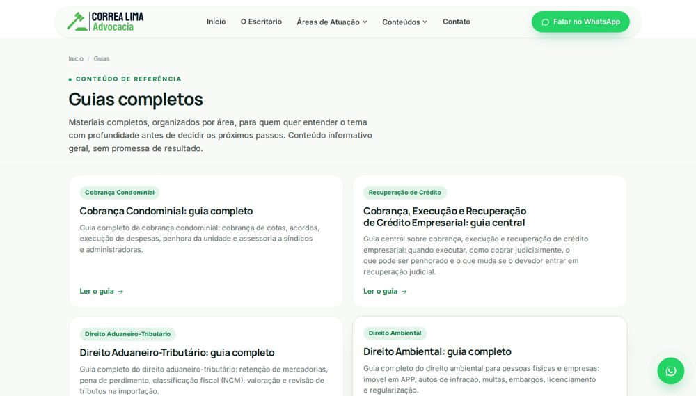
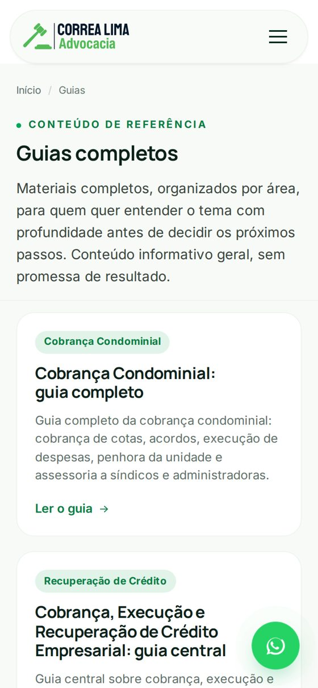
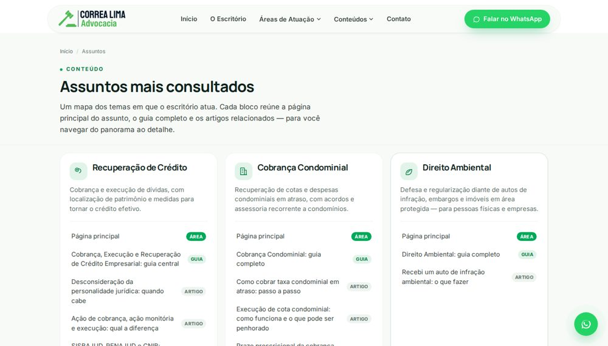
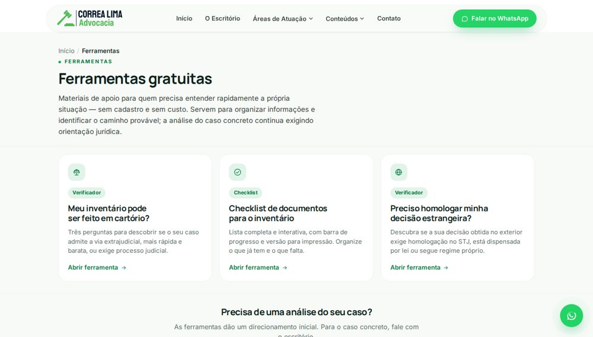
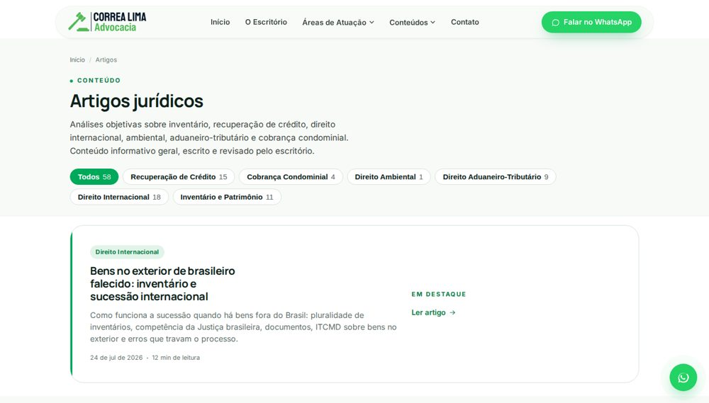
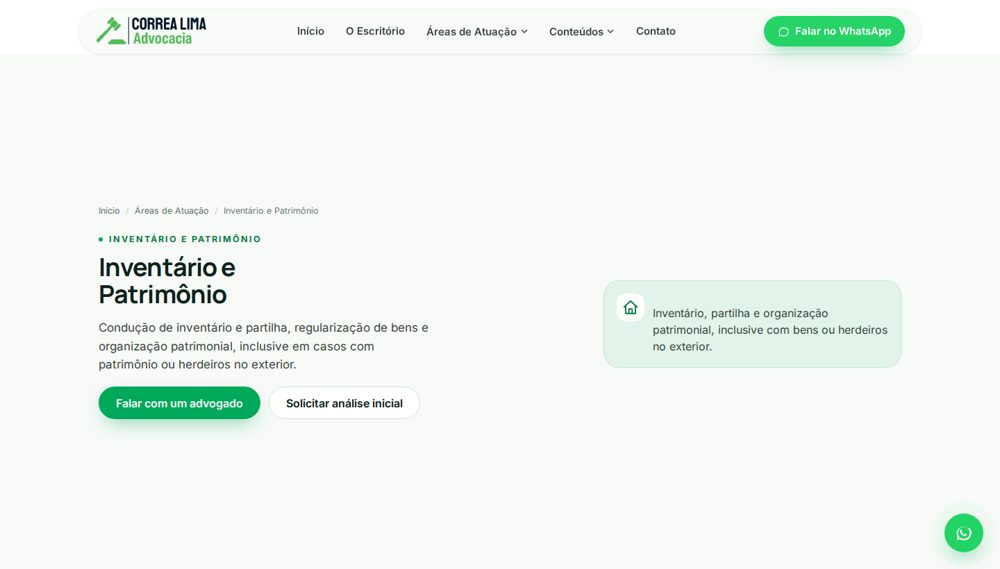

Corrêa Lima Advocacia · ajuste de altura/densidade do Hero por finalidade de página, sem altura fixa única, sem tocar na Home, no conteúdo jurídico, em URLs ou SEO.
| Página | Comportamento medido | Decisão |
|---|---|---|
| Home | Aprovada | Não alterada |
| Áreas de Atuação (pilar) | Hero preenche a dobra; 2ª seção começa 2 px abaixo do fim da tela | Já correta — mantida (HeroLanding) |
| Subáreas | Idem pilar (2 px) | Já correta — mantida |
| Áreas (índice) | Hero já usa o token compacto --section-y-sm; cards começam cedo | Equilibrada — mantida |
| Blog | Hero airado; destaque começava a ~515 px | Compactada (HeroIndex) |
| Assuntos | Hero airado; cards a ~419 px | Compactada (HeroIndex) |
| Guias | Espaço excessivo entre a descrição e os cards (~419 px) | Compactada (HeroIndex) |
| Ferramentas | Hero airado; cards a ~432 px | Compactada (HeroIndex) |
| Artigos | Sem hero dedicado; conteúdo flui após o breadcrumb | Equilibrada — mantida (HeroArticle) |
| Guia (individual) | Idem artigo | Mantida |
| Ferramenta (individual) | Ferramenta interativa aparece logo abaixo do título | Mantida |
| O Escritório | Conteúdo (H2) começa a ~233 px | Equilibrada — mantida (HeroInstitutional) |
| Contato / LGPD / Termos / Privacidade | Conteúdo começa cedo (~150–290 px) | Equilibradas — mantidas |
As quatro páginas de listagem compartilham o mesmo Hero (.cx-hero = HeroIndex). Numa sprint anterior, ao unificá-las nesse componente, o padding vertical ficou maior que o padrão compacto anterior — origem do espaço excessivo que se via em /guias/. A correção:
clamp(2rem, …, 3.4rem) simétrico para clamp(1.5rem,…,2.25rem) no topo e clamp(1rem,…,1.4rem) embaixo..cx-hero + .cx-section) passou a ter padding-top pequeno (clamp(0.85rem,…,1.4rem)).Resultado medido (desktop): o primeiro card/destaque subiu cerca de 60 px — em /guias/ e /assuntos/, de ~419 px para ~360 px; no Blog, o destaque de ~515 px para ~455 px; em Ferramentas, de ~432 px para ~371 px. Em uma tela de 900 px, isso deixa ~450–540 px de conteúdo visível já na primeira dobra.






.p-hero / .s-hero (áreas e subáreas): preenche a dobra útil (min-height: clamp(30rem, calc(100dvh − header), 60rem)), conteúdo centrado; a 2ª seção só aparece após rolagem. Inalterado nesta sprint..cx-hero (blog, assuntos, guias, ferramentas): compacto, prioriza a exibição rápida dos cards. Ajustado nesta sprint..entry (artigos e guias): apenas breadcrumb + título; o conteúdo flui imediatamente. Já adequado..inst / índice de áreas (institucionais): usa o token compacto --section-y-sm. Já adequado.Cada categoria usa o comportamento proporcional ao seu objetivo — sem uma altura fixa única.
Modificado:
src/styles/content-index.css — Hero das listagens (HeroIndex) compacto + gap reduzido até a 1ª seção
Não alterado: areas-hero.css (HeroLanding), componentes de área/artigo/institucional, conteúdo, URLs, SEO, schema, Analytics, Home.
Validação: npx astro check → 0 erros / 0 avisos / 0 hints. npm run build → 132 páginas, 130 URLs (idênticas). Sem scroll horizontal em 390/360 px. Medições confirmadas em 1440, 1280 e 1024 px (desktop/notebook/tablet) e 390 px (mobile).